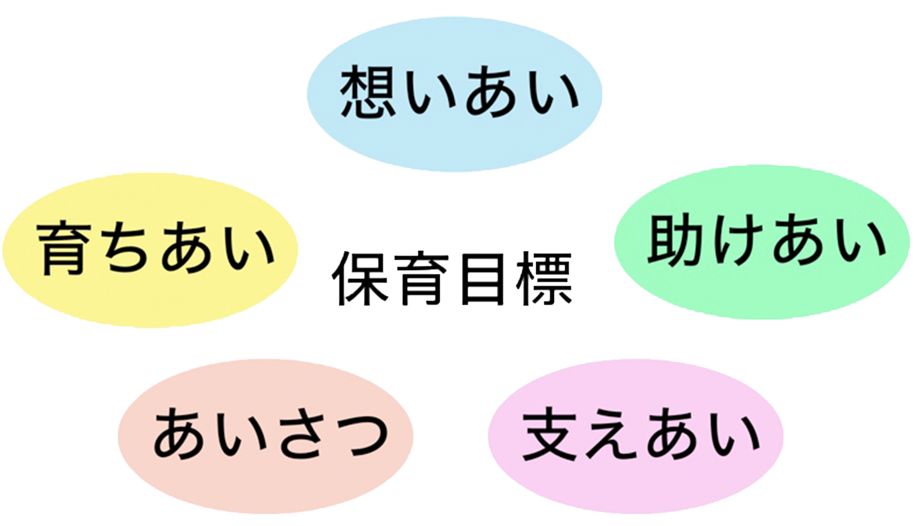
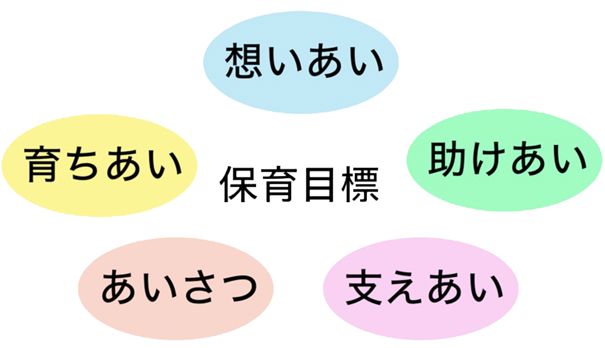

園の紹介
園の紹介

保育方針
園の概要
| 年齢・定員 | |
|---|---|
| ０歳 | 6人 |
| １歳 | 6人 |
| ２歳 | 7人 |
| 開所時間 | |
|---|---|
| 平日 | 午前７：００〜午後７：００ |
| 土曜日 | 午前８：００〜午後６：００ |
| 基本時間（８時間） | |
|---|---|
| 平日 | 午前８：００〜午後４：００ |
| 土曜日 | 午前８：００〜午後４：００ |
延長保育
| 延長時間 | |
|---|---|
| 平日 | 午前７：００〜午前８：００ |
| 午後４：００〜午後７：００ | |
| 土曜日 | 午後４：００〜午後６：００ |
| 延長保育料 | ||
|---|---|---|
| 平日 | ７：００〜８：００ | ２００円/日 |
| １６：００〜１７：３０ | ３００円/日 | |
| １７：３０〜１８：３０ | ２００円/日 | |
| １８：３０〜１９：００ | ２００円/日 | |
| 土曜日 | １６：００〜１７：３０ | ３００円/日 |
| １７：３０〜１８：００ | ２００円/日 | |
※月額の場合：各時間それぞれ３０００円/月
施設写真

園の見学について
園の見学は、随時受付けしています。
実際に保育の様子をご覧いただくことも出来ます。
希望される方は、事前にご連絡をお願いします。
(TEL:***-***-****)
施設内マップ
施設地図
相手を気づかう心を育む
出来ないことを言える強さを育む
協力し合うことの喜びを育む
学びあうことの楽しさを育む
ありがとう、ごめんねが言える
素直な心を育む